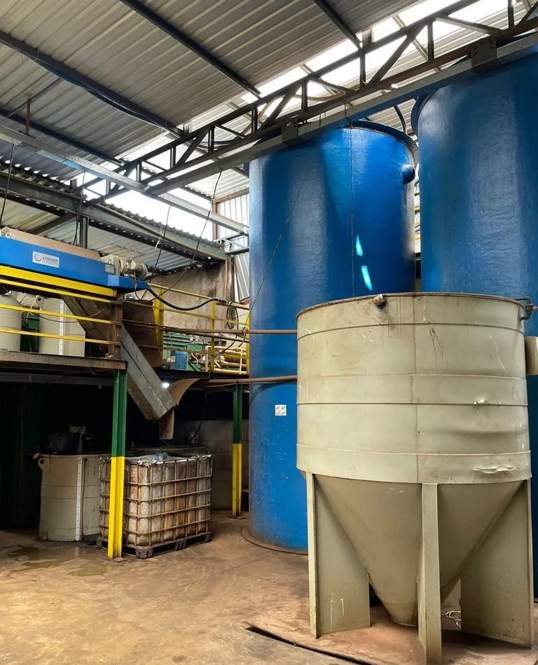

Gestão e destinação
Gerenciamento e destinação de resíduos com avaliação de material, volume e frequência.
Acessar páginaA DMS integra conhecimento, transporte, tratamento e destinação para atender demandas ambientais com cuidado e clareza em cada etapa.
Veja detalhes e faça uma pré-qualificação orientada para cada tipo de atendimento.
Gerenciamento e destinação de resíduos com avaliação de material, volume e frequência.
Acessar páginaAvaliação personalizada de carga, rota, origem e destino.
Acessar páginaEquipamentos e opções de locação conforme a aplicação e o período.
Acessar páginaO escopo depende das características do resíduo, da quantidade, da frequência, da localização e das condições do atendimento. Nossa equipe começa entendendo esses pontos.
Apoio ao planejamento das rotinas e à organização do manejo de resíduos sólidos e líquidos, classes I e II.
Serviço de transporte de resíduos com licenças aplicáveis, orientado pelas características da carga e da operação.
Soluções para efluentes líquidos, considerando composição informada, volume e condições técnicas de recebimento e tratamento.
Destinação de resíduos e efluentes em conformidade com as licenças e exigências pertinentes ao serviço contratado.
Tipo de material, quantidade, cidade, frequência e prazo desejado.
As informações iniciais ajudam a direcionar a conversa e avaliar o atendimento.
Escopo, viabilidade, documentação e condições operacionais.
Quando tecnicamente aplicável, a equipe organiza os próximos passos.
As informações enviadas no primeiro contato servem como ponto de partida. A classificação, aceitação, transporte, tratamento e destinação dependem de avaliação técnica e das licenças e condições aplicáveis.
Para agilizar a conversa, tenha em mãos, quando possível, uma descrição do material, estimativa de volume, cidade da operação e fotos ou documentos de apoio.
Iniciar uma avaliação
Com algumas informações, nossa equipe pode direcionar melhor a conversa.